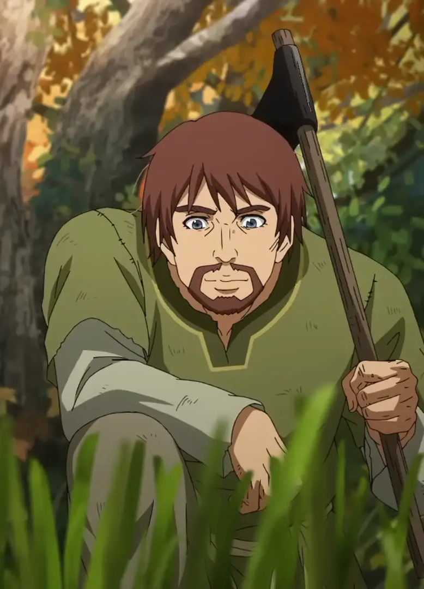

Sumário
- Início
Einar
Einar é um ex-escravo que trabalhava em um campo no norte da Inglaterra até que este foi incendiado durante um ataque viking, tornando-se então escravo novamente. Ele conheceu Thorfinn na fazenda de Ketil e, mais tarde, tornou-se amigo íntimo dele. Ele também se aproximou muito de Arnheid e Sverkel na fazenda. Ele se junta a Thorfinn em sua jornada para Vinland e ajuda a criar a Vila de Arnheid.

| Campo |
Informação |
| Nome |
Einar |
| Nacionalidade |
Nórdico (provavelmente norueguês) |
| Criador |
Makoto Yukimura |
| Papel na História |
Companheiro de escravidão e depois amigo profundo de Thorfinn; peça essencial na transformação pacifista do protagonista. |
| Idade |
Jovem adulto |
| Família |
Viveu com a mãe e a irmã, ambas mortas durante a invasão de vikings à sua aldeia. |
| Personalidade |
Bondoso, resiliente, honesto e emocionalmente intenso; mantém um senso de justiça mesmo após traumas profundos. |
| Habilidades |
Força física; trabalho agrícola; determinação e capacidade de persistência; influência positiva sobre Thorfinn. |
| Arco Narrativo |
De camponês livre a escravo; se torna figura-chave para o renascimento moral e emocional de Thorfinn; acompanha-o na jornada para alcançar Vinland. |
| Primeira Aparição |
Início do Arco da Fazenda (Arco da Escravidão) |
| Observações |
Einar não é baseado em uma figura histórica específica; representa o povo comum oprimido pela violência viking. |